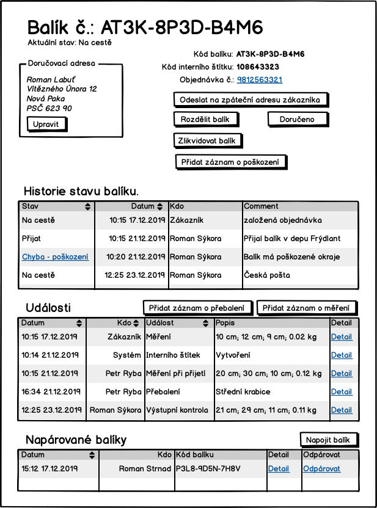

Obrazovky
Zde jsou schematicky popsané obrazovky systému.
S-000 - Info box
V některých případech systém potvrzuje, že operace dopadla dobře, nebo že neco není možné udělat a zárověn to nemá povahu validace pole. V těchto a podobných případech budem ukazovat oznámení:
Ve výsledku to může vypadat odlišně.
S-00 - Přihlašovací obrazovka
Přihlašovací obrazovka

Chyba ve formuláři se zobarazí následovně:

S-01 - Základní rozcestník

Sekci "Pracovník podpory" uvidí pouze pracovník podpory, stejně se chová sekce "Dispečer". Detaily toho, kdo co vidí jsou vidět za analýzy.
S-02 - Odhlášení

S-03 - Hledání balíků

Do pole hledat, pujde zadat část libovolné adresy, kód balíku, telefon zákazníka, čast jména, prostě cokoliv.
S-04 - Detail objednávky
Obrazovka obsahuje několik samostatných sekcí:
- Obecné infromace o objednávce
- Platby
- Kontaktní historie
- Historie stavů
- Daňové doklady
Stránku může být rozdělená pomocí záložek na více. Pokud odkaz na detail balíku není aktivní znamená to, že balík fyzicky nemáme a ani jsme neměli.

Detaily záznamů kontaktní historie na této stránce nejsou vidět. Pro ně by měla vzniknout nová stránka s jejich seznamem a zde pribýt odkaz na ní.
S-041 - Potvrzení odpárování platby
Pokud pracovník podpory na obrazovce S-04 detail objednávky stiskne odpárovat, tak se mu zobrazí potvrzovací dialog:
S-045 - Vystavit dobropis

S-046 - Vystavit fakturu

S-047 - Vytvořit záznam do komunikační historie
S-05 - Detail balíku

Může být součástí stránky S-04 Detail objednávky
S-051 - Změna doručovací adresy
Může být součástí stránky S-04 Detail objednávky
S-06 - Přehled plateb

V posledním sloupci bude vidět, jestli je platba spárovaná s objednávkou. Pokud ano, pak zde bude odkaz na detail objednávky.
Checkbox "Zobrazit pouze nespárované" platby umožní omezit pohled jen na nespárované.
Pokud je nějaké číslo odchozího účtu zvýrazněné jako odkaz, pak to znamená, ze z toho účtu nám přišlo víc platek a kliknutím na odkaz si lze tyto platby vyfiltrovat - S-08 seznam plateb vyfiltrovaný podle odchozího účtu.
S-07 - Přidání platby

S-08 - Seznam plateb vyfiltrovaný podle odchozího účtu

S-09 - Spárovat platbu s objednávkou

Po potvrzení "Spárovat" nebo "Cancel" se uživatel vrací na stránku v výpisem plateb.
S-10 - Hledání objednávek

Objednávky lze filtrovat podle:
- Textu v adresách
- V emailech
- Minimální a maximální ceny objednávky
- Stavu objednávky - zde půjde hledat pouze nezaplacené objednávky. Ve seznamu stavů bude možnost hledat objednávky v libovolném stavu.
S-011 - Hledání objednávek podle plateb
Obrazovka pro hledání chybových stavů u plateb. Například:
- Objednávek, kde zákazník po zaplacení poslal platbu podruhé.

S-11 - Spárovat objednávku s platbou
Po stisknutí "Spárovat" na S-10 se zobrazí obrazovka:

S-12 - Seznam uživatelů
Odkaz na tuto stránku povede přímo z hlavního rozcestníku S-01.

Poslední uživatel Milan Strnad není aktivní a nebude se moc přihlásit do systému.
S-13 - Přidat uživatele

S-14 - Upravit uživatele
S-15 - Nastavit heslo uživatele

S-200 - Zadání kódu balíku

S-201 - Zadání zpáteční adresy
Stránka slouží pro opsání adresy odesílatele z balíku. Protože adresa můze být poškozená nebo nemusí být uvedená vůbec, jsou jednotlivá pole nepoviná. Pouze by zde měla být validace na maxímální délku.

S-202 - Kontrola zpáteční adresy

S-203 - Je balík poškozen?

S-204 - Poškození balíku

S-205 - Tisk intern√≠ho ≈°t√≠tku üñ®

S-206 - Zadání spotřeby obalového materiálu

S-207 - Měření a vážení
Všechna pole jsou povinná a musí obsahovat číselné hodnoty.
S-208 - Fronta kam má být balík vložen

S-209 - Načtení interního štítku
Stránka pro načítání interního štítku se načte tak, ze focus je v poli pro kód interního štítku. To umožní dispečerovi čtečkou načít čárový kód bez dalšího klikání. Stejně tak by stránka měla poznat, že kód byl načten a přejít na další stránku bez potvrzování tlačítkem "pokračovat".
Na stránce by měla být validace, že kód interního štítku existuje a balík je ve správném stavu. To co je správný stav zavisí na použitém UC.

S-210 - Co dál s chybovým balíkem

S-211 - Načtení interního štítku 2
Stejná stránka jako je S-209 s tím, že na obrazovce je možnost zadat, že balík nemá interní štítek.
S-212 - Tisk štítku dopravce
Zároveň se zobrazením této obrazovky se vytiskne štítek dopravce.